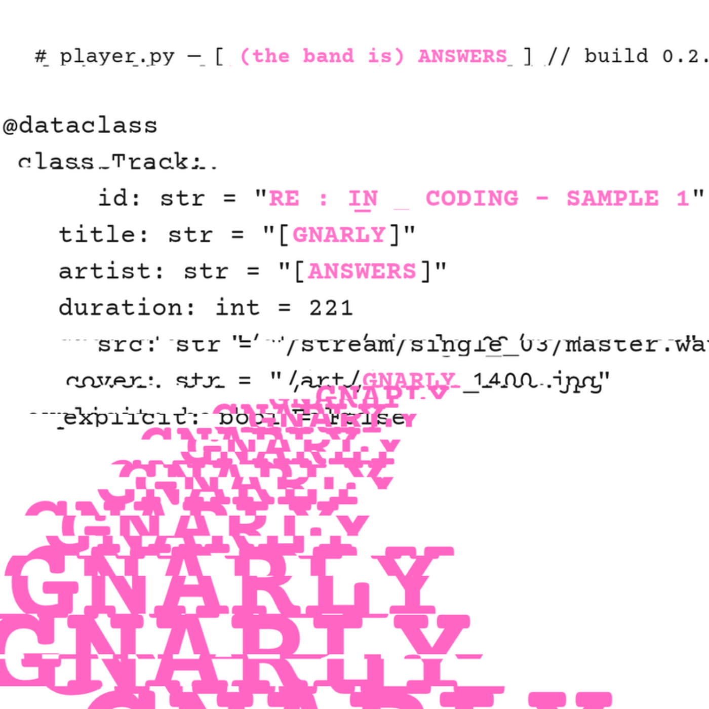
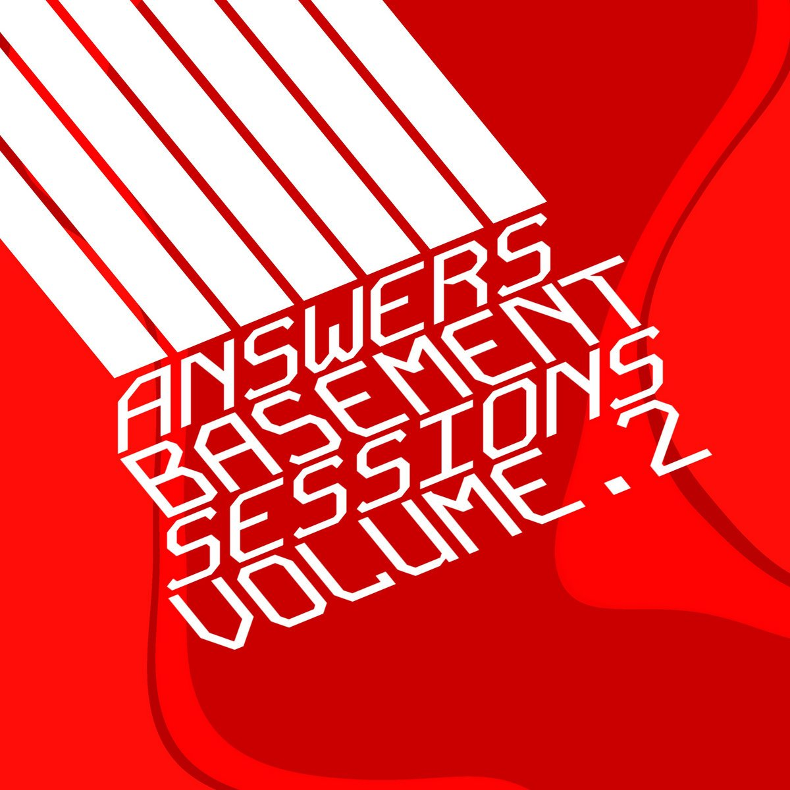
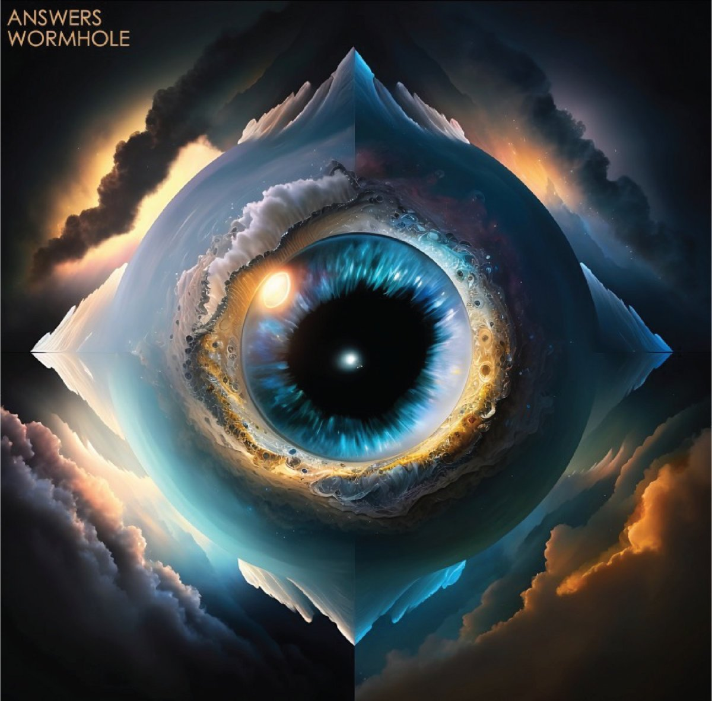
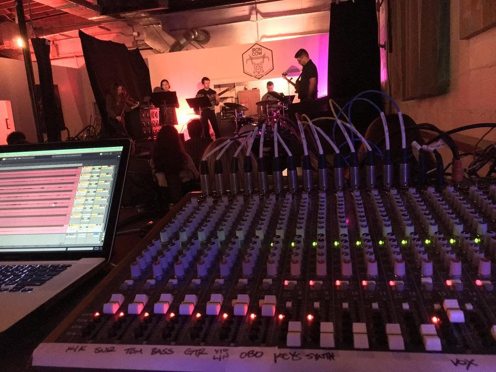

Hi. You must have questions.
We have ANSWERS.

RE: in_coding
RE: in_coding is ANSWERS’ newest project exploring what happens when we “re-encode” old recordings with new improvisation, old memories with new memories, and live LIDAR visuals.
Learn MoreOut now
Basement Sessions, Vol. 2
Recorded in spring and summer 2025, the basement sessions are fully improvised, spontaneously explorations of ANSWERS’ unyielding, evolving sound.
LISTEN
Wormhole
Written by Beatriz Ramirez-Belt, Wormhole is a guided improvisation. These live recordings unfolded differently each time, separated by years.
LISTEN
Looking for ANSWERS?
ANSWERS is a quintet of improvising composers. Equally at home in amplified and acoustic settings, the band performs spontaneous improvisations, original works, interpretations of graphic scores, virtuosic contemporary classical music, and works for open instrumentation. Answers is on a mission to perform without limitations.
About the bandANSWERS live
Select performances from our 8+ year career.

ANSWERS is waiting for your question.
Based in Orlando, FL, ANSWERS is available for performance opportunities.